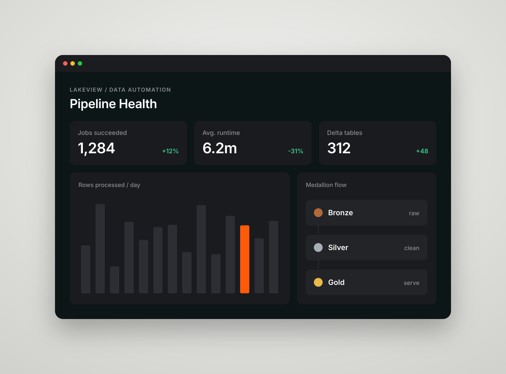
AAccenture
Built AI-driven data automation pipelines on Databricks — Delta Lake, PySpark and Workflows for scalable ETL, with Lakeview dashboards and a Snowflake integration for automated reporting.
Engineering Data Systems that Power AI & Analytics

Built AI-driven data automation pipelines on Databricks — Delta Lake, PySpark and Workflows for scalable ETL, with Lakeview dashboards and a Snowflake integration for automated reporting.
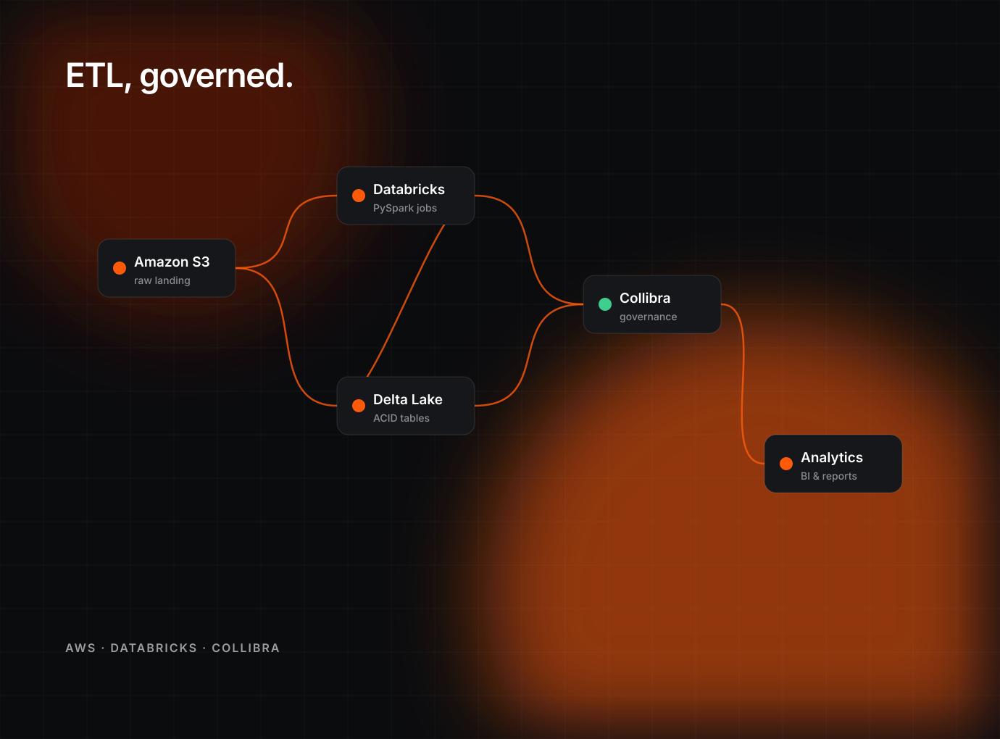
Built and optimised AWS-based data pipelines on Databricks, and used Collibra to streamline data governance and metadata management across enterprise datasets.
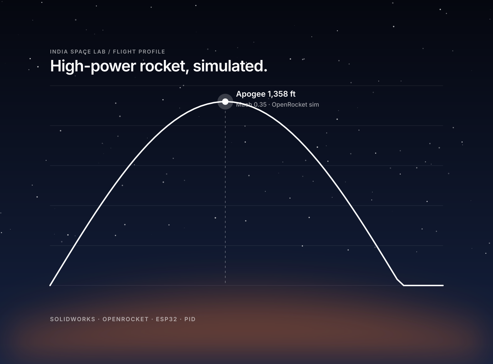
Designed a modular quadcopter in SolidWorks, optimised high-power rocket configurations in OpenRocket (1,358 ft apogee) and engineered an ESP32 IoT telemetry payload with GPS-driven PID control.
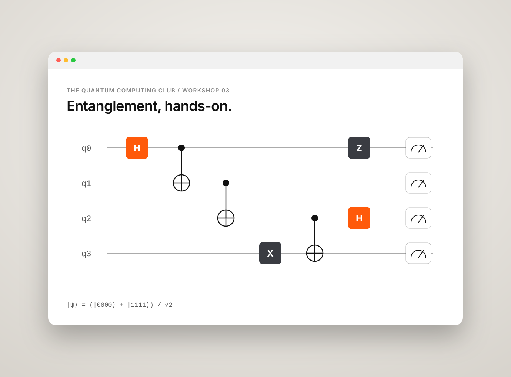
Leading strategic planning and execution of technical events, workshops and collaborations — coordinating cross-functional teams and mentoring student members at NCU.
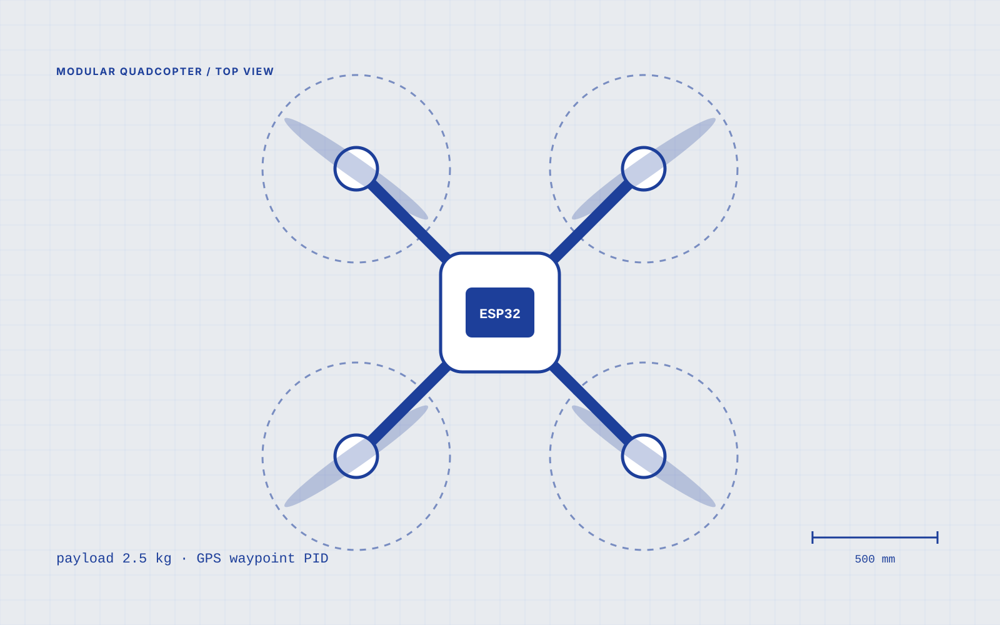
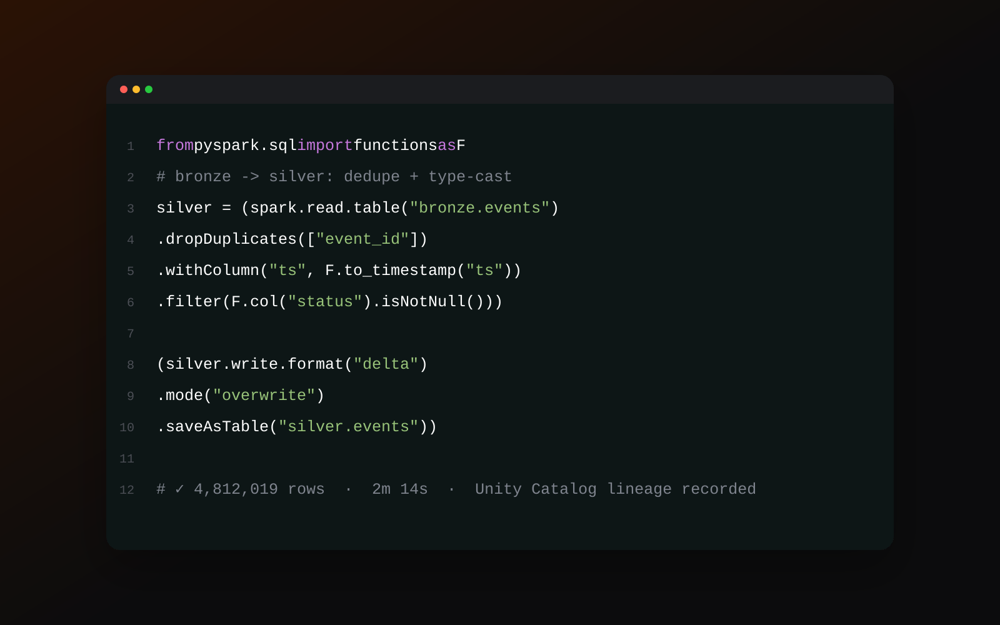
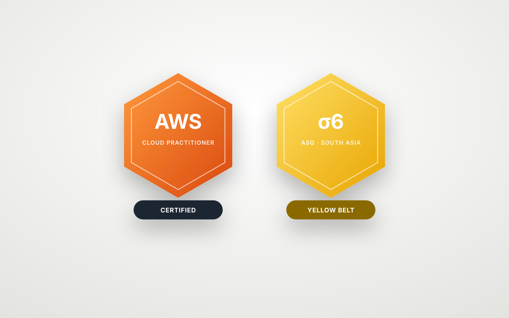
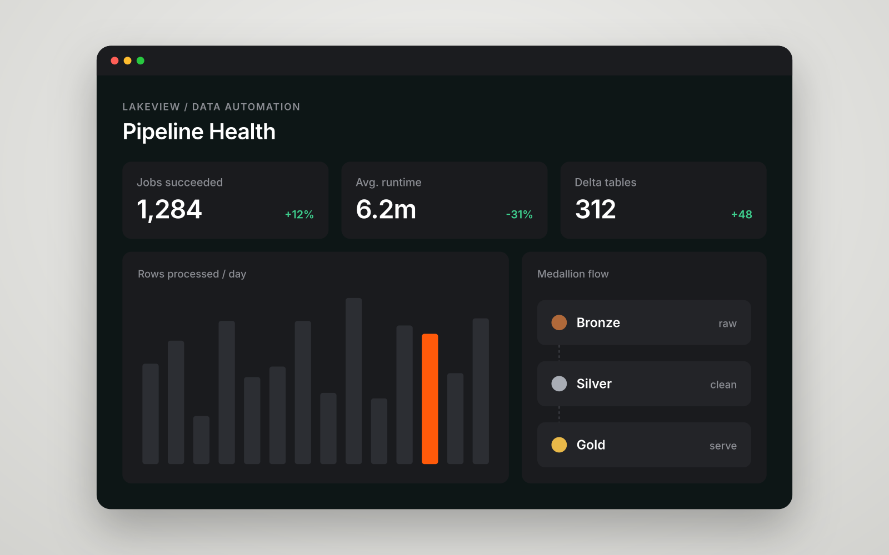
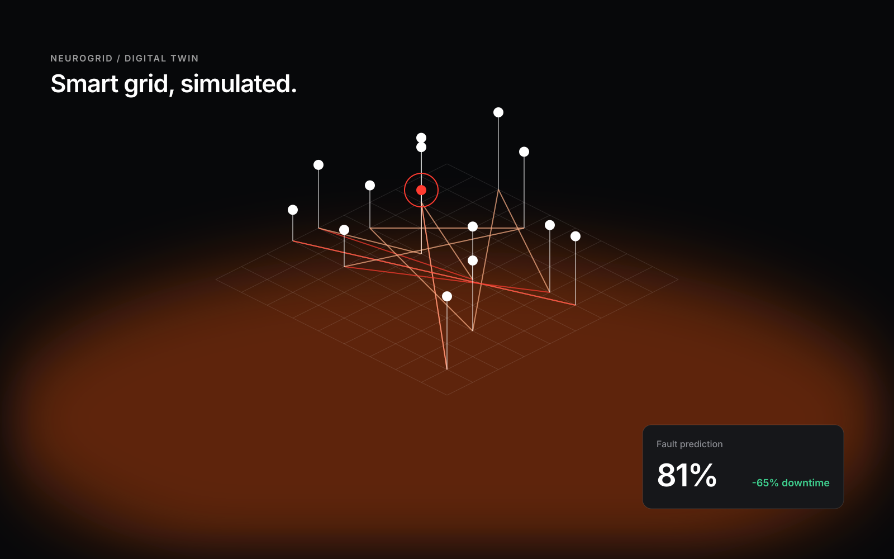
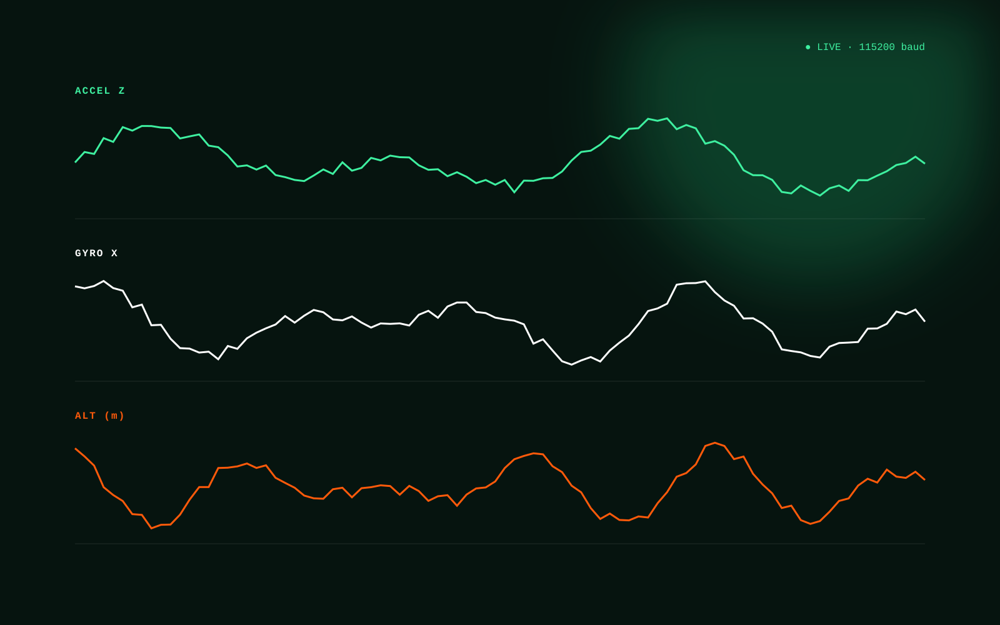
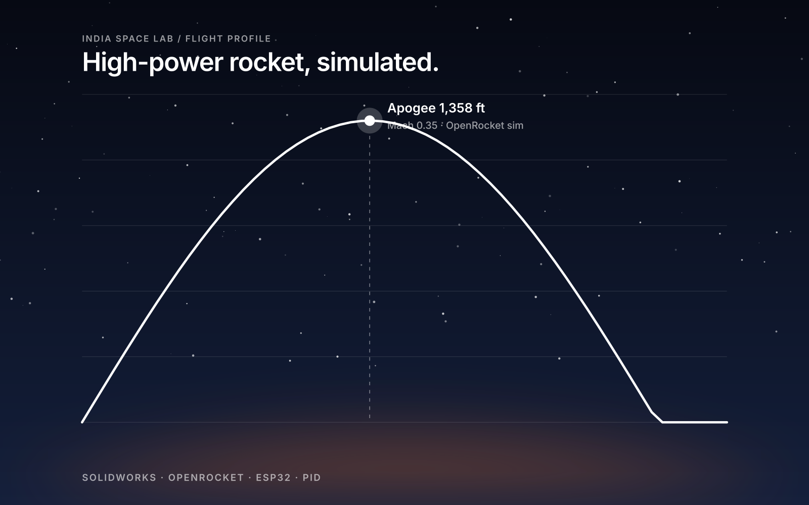
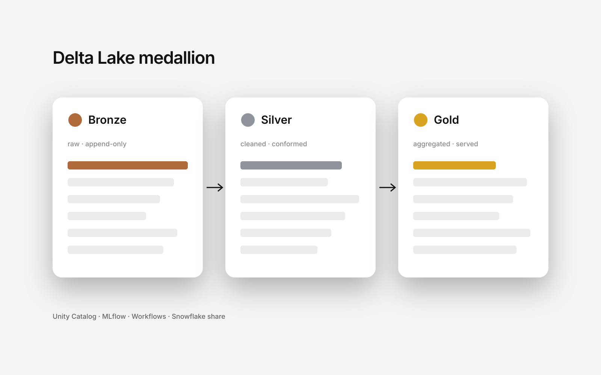
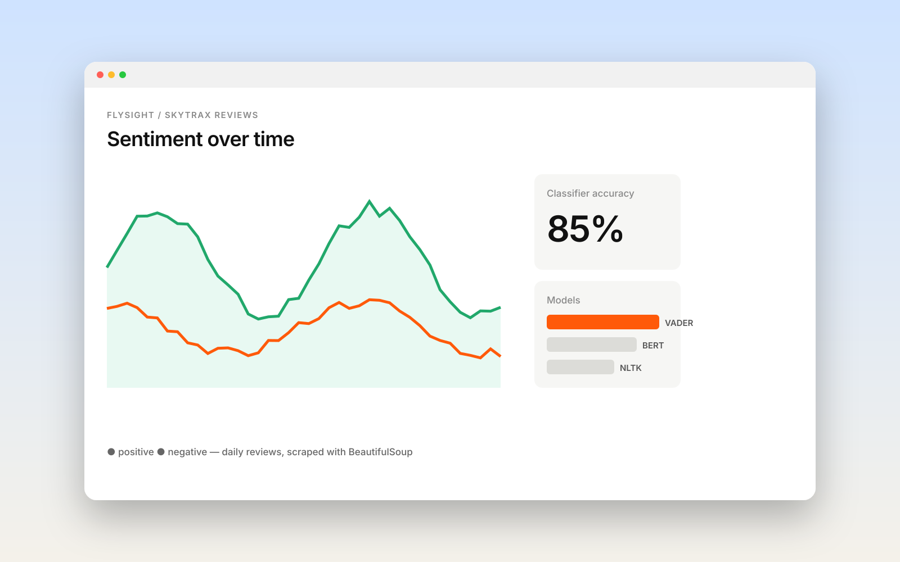
Scalable ETL on Databricks — Delta Lake, PySpark, Workflows and Unity Catalog, built for reliability and governance.
Forecasting, classification and anomaly detection with Scikit-learn, XGBoost and TensorFlow, tracked end to end with MLflow.
LLM applications, RAG pipelines and agentic workflows built with LangChain and LangGraph.
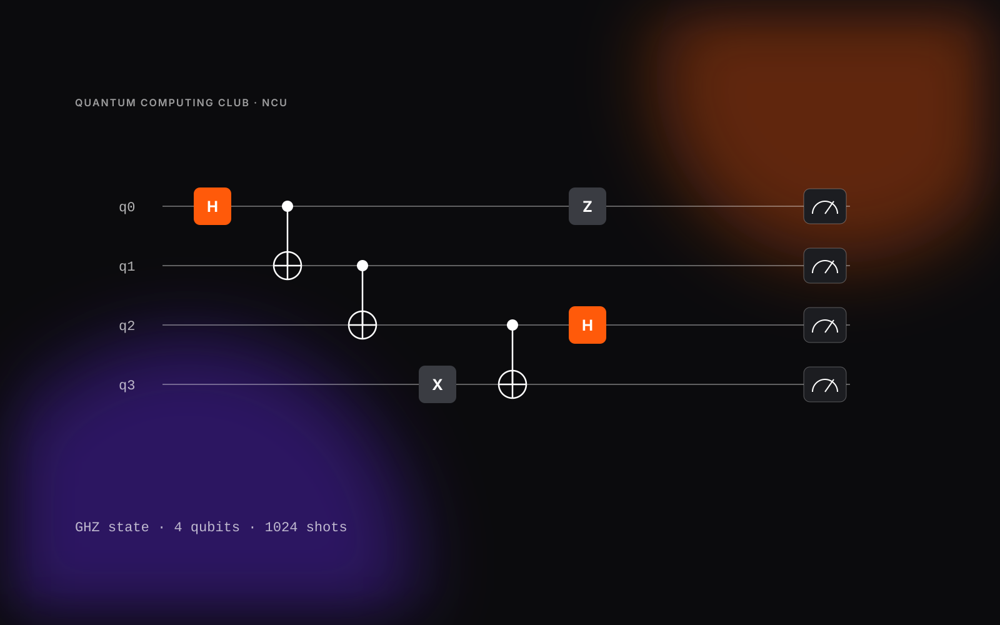
Sentiment and text analytics with NLTK, VADER and BERT transformers — from scraped reviews to real-time insight.
Lightweight detection and OCR pipelines with YOLOv4-Tiny and EasyOCR.
FastAPI and REST services, Streamlit prototypes and API integrations that put models in people's hands.
AWS (Certified Cloud Practitioner) and GCP, with GitHub, Jupyter and VS Code as the daily toolkit.
Dashboards and reporting in Tableau, Lakeview, Bokeh, Plotly and KNIME, backed by MySQL and MongoDB.
Data comes first. I start by understanding the sources, the questions the business needs answered and the quality of what's available — then design ingestion and medallion layers that make every downstream step trustworthy.
Next I model. Feature engineering, experiments and evaluation — classical ML, transformers or agentic LLM workflows, whichever fits the problem — tracked so results are reproducible and comparable.
Finally, we ship. APIs, dashboards and automated workflows on the cloud, with governance and monitoring built in, so the system keeps delivering long after launch.
CGPA at The NorthCap University
0Sentiment classification accuracy
0Simulated grid downtime reduced by
0
I believe good engineering is more than working code. It's about clarity, reliability and measurable outcomes. Every system I build starts with the question it needs to answer and the people who will depend on it.
My approach blends data engineering with machine learning, so models are only as clever as they need to be and pipelines are robust enough to trust — whether it's an ETL workflow, a forecasting model or an agentic GenAI application.
I'm studying B.Tech Computer Science (Data Science) at The NorthCap University with a 9.76 CGPA.
My first internship was in aerospace — simulating rockets and building IoT telemetry at India Space Lab. Since then I've worked on enterprise data platforms at Dadata Consulting and Accenture, building pipelines on Databricks, AWS and Snowflake.
Today I focus on data-driven systems that bring together engineering, ML and GenAI.
As Vice President of The Quantum Computing Club I plan workshops, run events and mentor student members. I also volunteer with NSS NCU on social-awareness initiatives — and I'm always up for a hard problem.
AWS Certified Cloud Practitioner and Six Sigma Yellow Belt (ASQ South Asia).
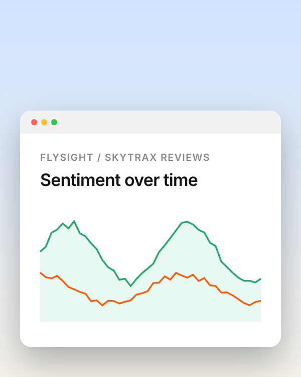
PYTHON · BEAUTIFULSOUP · NLTK · VADER · BERT
"An end-to-end analytics pipeline that scrapes daily Skytrax reviews and classifies sentiment with 85% accuracy — cutting manual analysis time by 90% with real-time visual insight for airlines."→VIEW ON GITHUB
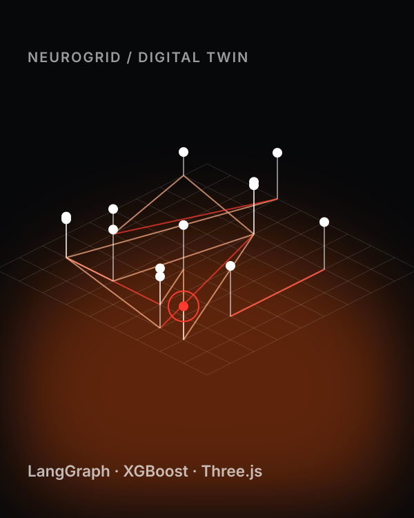
LANGGRAPH · XGBOOST · FLASK · THREE.JS · WEBSOCKETS
"A smart-grid management system with ML load forecasting and anomaly detection — 81% fault-prediction accuracy, 65% less simulated downtime, and a live 3D digital twin of the grid in the browser."→VIEW ON GITHUB